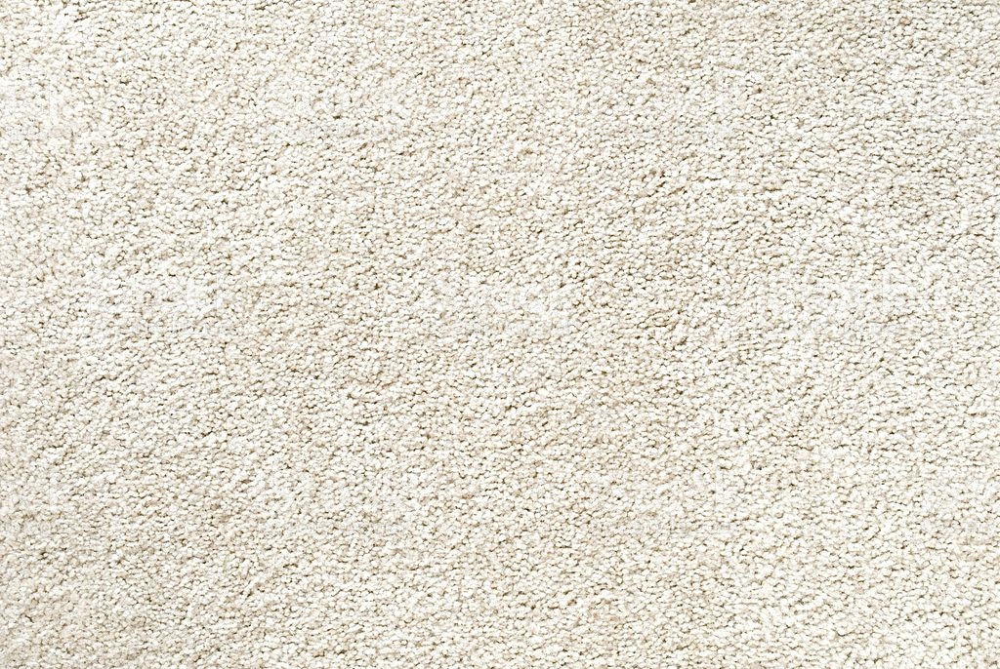
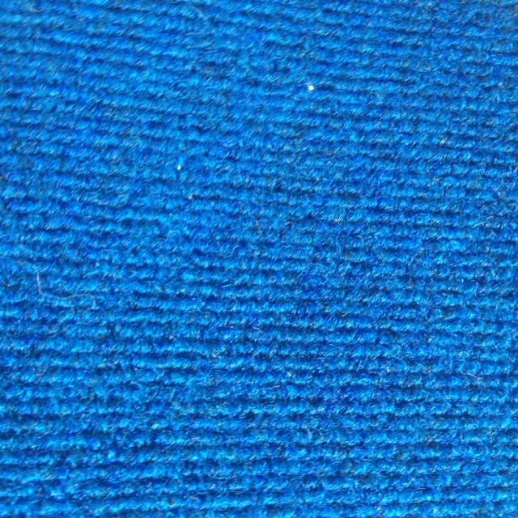
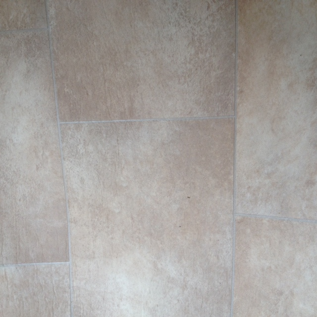
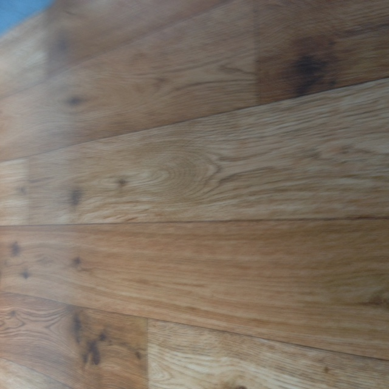
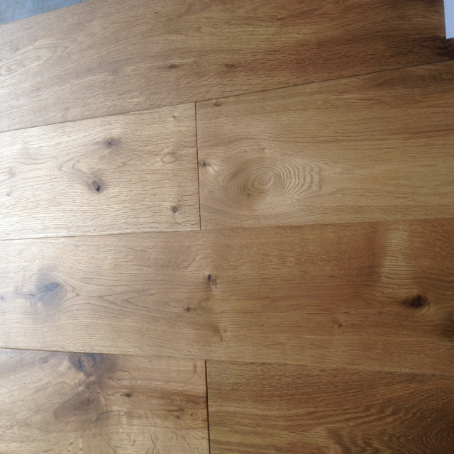
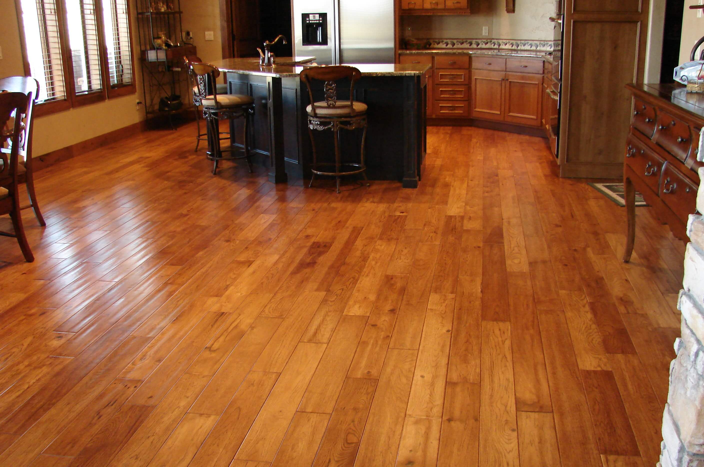
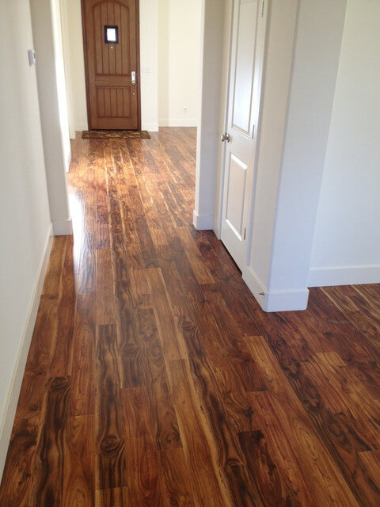
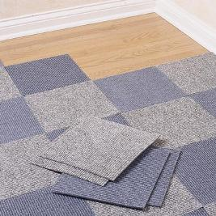
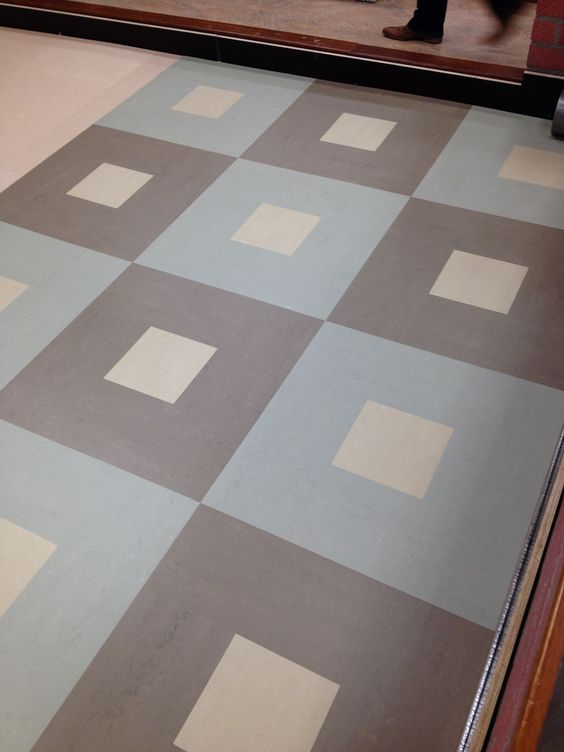

Services
Carpets
There is nothing quite like the softness of carpet underfoot to bring warmth, comfort, style and that added touch of luxury to your home. With hundreds of colours, textures and patterns to choose from, carpet has the versatility to complement any decorating style and is a perfect flooring choice for every room in a home

Vinyls
Vinyl is an extremely versatile flooring option. It’s hardwearing, easy to clean and care for, and is soft and warm underfoot. With a wide range of patterns and colours, it’s a popular choice for areas such as kitchens, utility rooms and bathrooms but can also be used in any room of a home today.


Hardwoods
The elegant look of a hardwood floor can add warmth and character to any room in a home with products made from Ash, Maple, Birch, Oak and Cherry
Laminates
Laminate flooring is quite versatile and durable. Due to laminate flooring being a printed strip of vinyl over a composite board many textures and styles of flooring can be replicated. Recently laminate floors have seen success in simulating stone and tile patterns as well as wood.
Carpet tiles
Carpet tiles, also known as carpet squares or modular carpet, are a modern and stylish alternative to standard carpet rolls. Often used in commercial settings, they are becoming more and more popular in residential spaces.
Marmoleum
Marmoleum is a flooring material that is sustainable. It is made with natural ingredients without any harmful VOCs. Marmoleum has no adverse health issues whatsoever, either during production, its useful life, or disposal.
P.V.C
P.V.C flooring is extremely hard wearing, warm and comfortable underfoot, slip resistant and easy to clean.